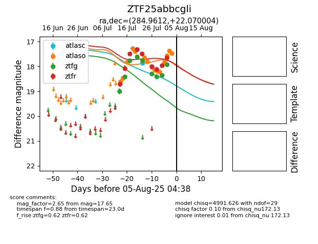

Target ZTF25abbcgli at 2025-07-23 11:52, see:
FINK: fink-portal.org/ZTF25abbcgli
Lasair: lasair-ztf.lsst.ac.uk/objects/ZTF25abbcgli
ALeRCE: alerce.online/object/ZTF25abbcgli
alt names
ZTF25abbcgli (ztf,fink)
coordinates:
equatorial (ra, dec) = (284.9612,+22.07000)
galactic (l, b) = (53.6295,+8.11057)
photometry
last atlaso=17.36, ztfg=17.77, ztfr=17.49
3 atlaso, 5 ztfg, 5 ztfr detections
